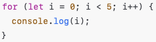
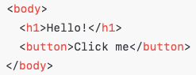
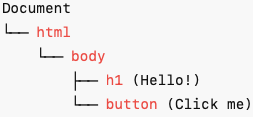

JavaScript Explained
JavaScript / HTML / CSS
-
HTML = Structure
HTML (HyperText Markup Language) structures the content on a webpage, defining elements like headings, paragraphs, links, and images.
-
CSS = Style
CSS (Cascading Style Sheets) controls the layout and visual appearance of the content, such as colours, fonts, spacing, and positioning.
-
JavaScript = Behaviour
JavaScript adds interactivity and functionality to a webpage, allowing for dynamic content changes, event handling, and interaction with users, like form validation or animations.
Think of HTML, CSS & JavaScript like a house...
-
HTML = Structure
The walls, doors, windows, and floors. It's the blueprint and bones.
-
CSS = Interior Design
Paint colors, tile, furniture, curtains. It makes your house look good.
-
JavaScript = Electricity & Plumbing
It makes the lights turn on when you flip a switch, the fridge run, the garage door open. It adds functionality.
JavaScript Concepts
Control Flow
Control flow is the direction your code takes when it runs. It's like choosing which road to take based on traffic lights or road signs.
By default, code runs top to bottom, one line after another.
But sometimes, you want code to make decisions, do different things based on conditions, or repeat tasks. This is where control flow tools come in.
Loops
A loop says:
"Do this over and over until I tell you to stop"
It's how we repeat code without writing it again and again.
- Start Point - Where does the loop begin?
- Condition - When should the loop keep going?
- Update - What changes after each loop
- "let i = 0" → Start at 0
- "i < 5" → Keep going while i is less than 5
- "i++" → After each loop, add 1 to i
Most loops have 3 key parts:
Example:
The DOM
The DOM (Document Object Model) is a structured representation of your HTML — like a map of everything on the page — that JavaScript can see and change.
The DOM turns your webpage into a tree of nodes. Each HTML element becomes an object that JS can interact with.
Example in HTML format:
Example in DOM Tree Format:
| Method | What It Does |
|---|---|
getElementById('id') |
Finds an element by its id |
querySelector('selector') |
Finds the first element that matches a CSS selector |
querySelectorAll('selector') |
Gets all elements that match |
textContent |
Get/set the text inside an element |
style.property |
Change an element's CSS directly |
addEventListener('event', fn) |
Listen for clicks, keypresses, etc. |
Accessing Data from Arrays vs Objects
-
Arrays []
An arrray is a data structure used to store a list of values in a specific order. Each item in the array is called an element, and it can be accessed by its index number, starting from 0.
Example: A list of NZ Native Tree Names
const nativeTrees = ["Kauri", "Kahikatea", "Pōhutukawa"]; console.log(nativeTrees[0]); // "Kauri" console.log(nativeTrees[2]); // "Pōhutukawa"When to use: When you want to store a list and the order matters, or you want to loop through it.
-
Objects {}
Definition: An object is a collection of key-value pairs. Each key (like "name" or "region") maps to a specific value.
Example: A single NZ native tree with details:
const tree = { name: "Kauri", height: "50m", region: "North Island", status: "Threatened" }; console.log(tree.name); // "Kauri" console.log(tree["status"]); // "Threatened"When to use: When you want to describe an item with multiple attributes.
| Feature | Array | Object |
|---|---|---|
| Structure | Ordered list of values | Key-value pairs |
| Access method | By index (e.g. nativeTrees[0]) | By key (e.g. tree.name) |
| Syntax | [] (square brackets) | {} (curly braces) |
| Ideal for | Lists, sequences | Structured data with named properties |
| Example | "Pōhutukawa" | tree["status"] → "Threatened" |
You can alsocombine arrays and objects to represent a collection of native trees:
const ngahere = [
{ name: "Kauri", height: "50m", region: "North Island" },
{ name: "Rimu", height: "35m", region: "South Island" },
{ name: "Pōhutukawa", height: "20m", region: "Coastal areas" }
];
console.log(ngahere[1].name); // "Rimu"
console.log(ngahere[2].region); // "Coastal areas"This is super useful when working with real-world data, like nature tracking apps, databases, or games!
Functions
Functions are like little machines in programming: they are self-contained blocks of code that perform a specific task or set of tasks. You give them input (called arguments or parameters), and they return an output (or result). Functions allow you to break down complex tasks into smaller, more manageable pieces of code, which makes your program easier to read, maintain, and debug.
Functions are helpful:
-
Reusability:
Once you define a function, you can use it multiple times throughout your program without needing to rewrite the same code. This reduces repetition and keeps your code cleaner.
-
Modularity:
Functions allow you to split your program into logical, smaller parts. Each function can perform one task, making the code easier to understand and work with.
-
Abstraction:
Functions help hide the complexity of a task. You don't need to know the details of how a function works to use it—just the inputs and what it returns.
-
Maintainability:
If a piece of code needs to change, you only need to update the function itself rather than every place it's used in your program. This makes updating or debugging your code much easier.
-
Testing and Debugging:
By testing individual functions, you can isolate and pinpoint problems more effectively than if you were testing a massive block of code all at once.
For Example:
function addNumbers(a, b) {
return a + b;
}
const result = addNumbers(3, 5);
console.log(result); // Output will be 8
*Here, addNumbers is a function that takes two inputs (a and b), adds them together, and returns the result. Instead of writing the addition code every time you need it, you can simply call the addNumbers function.